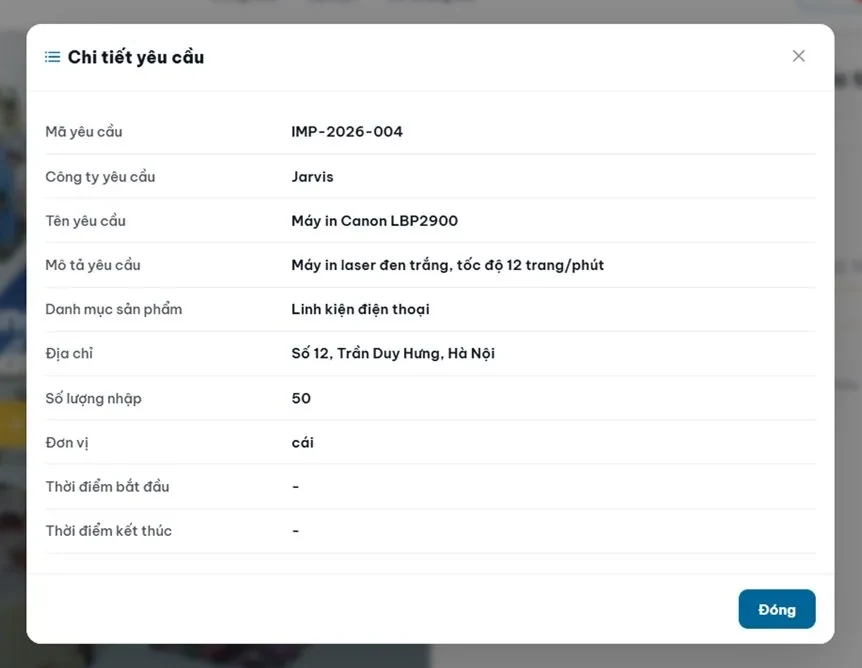
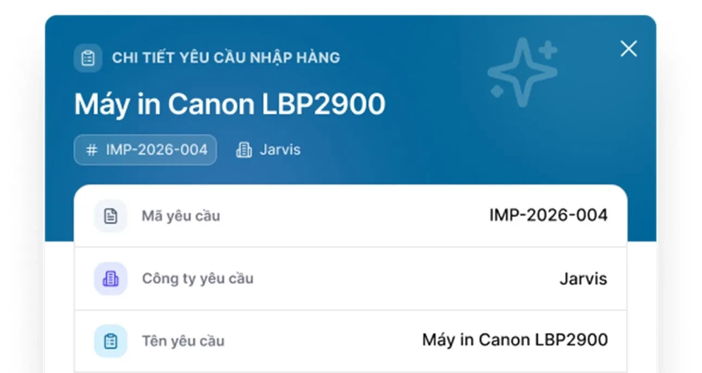
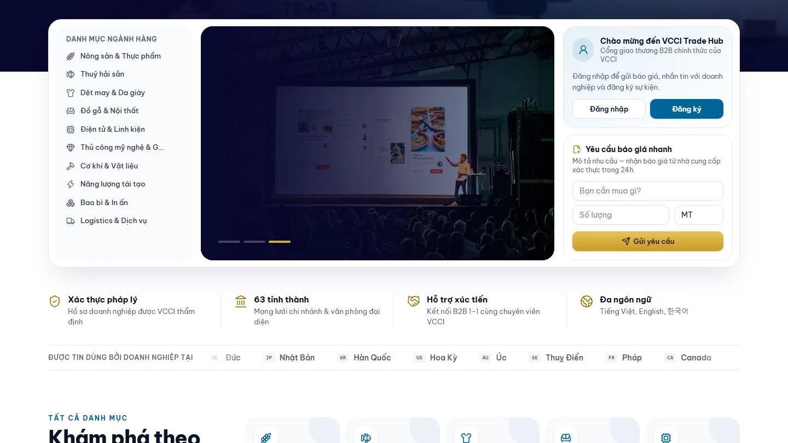
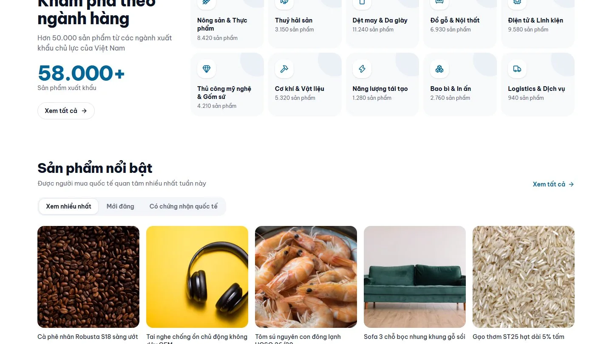
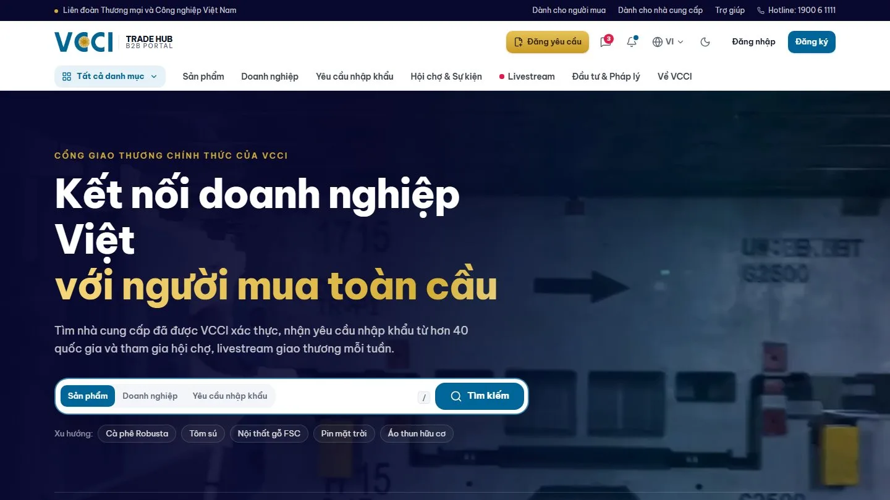

VCCI Trade Hub
The B2B gateway of the Vietnam Chamber of Commerce and Industry, rebuilt as one marketplace with a CMS behind it.Cổng giao thương B2B của VCCI, dựng lại thành một sàn duy nhất, phía sau là CMS.

- RoleVai trò
- UX/UI designer, portal and CMSUX/UI designer, cổng và CMS
- CompanyCông ty
- Jarvis Global, 2026Jarvis Global, 2026
- UsersNgười dùng
- Guests, buyers, sellers, VCCI staffKhách, bên mua, bên bán, cán bộ VCCI
- LanguagesNgôn ngữ
- Vietnamese, English, KoreanViệt, Anh, Hàn
The problemBài toán
Foreign buyers struggle to find verified Vietnamese suppliers, and enterprises retype the same profile for every event.Bên mua nước ngoài khó tìm nhà cung cấp Việt đã xác thực, còn doanh nghiệp phải khai lại cùng một hồ sơ cho mỗi sự kiện.
- GuestKháchBrowses, sends a request for quotation, registers with the full form.Xem, gửi yêu cầu báo giá, đăng ký bằng form đầy đủ.
- BuyerBên muaPosts import requests and looks for the verified badge.Đăng yêu cầu nhập khẩu và tìm dấu xác thực.
- SellerBên bánBuilds one capability profile and reuses it everywhere.Lập một hồ sơ năng lực rồi dùng lại ở mọi nơi.
- VCCI staffCán bộ VCCIApprove organisations, products, events and translations.Duyệt doanh nghiệp, sản phẩm, sự kiện và bản dịch.
What the first screen has to doMàn hình đầu phải làm được gì
1Search first, with a scopeTìm kiếm trước, có phạm vi
One bar over products, enterprises and import requests. The scope sits inside the bar, so the same keyword works for a buyer and a seller.Một thanh cho sản phẩm, doanh nghiệp và yêu cầu nhập khẩu. Phạm vi nằm ngay trong thanh, cùng một từ khóa dùng được cho cả bên mua lẫn bên bán.
2Categories one click awayDanh mục cách một cú nhấp
A three-column menu for people who know the sector but not the word.Menu ba cột cho người biết ngành nhưng chưa biết từ khóa.
3Two doors, one per sideHai cửa, mỗi bên một cửa
Sourcing from Vietnam or answering an import request. Each button says what happens next in a second line.Tìm nguồn hàng Việt, hoặc trả lời yêu cầu nhập khẩu. Mỗi nút có dòng phụ nói rõ bước tiếp theo.
4Only numbers the system knowsChỉ dùng số hệ thống có thật
These counts come from the database. Nothing on a card or a banner claims more than the data holds.Các con số lấy từ cơ sở dữ liệu. Không thẻ hay banner nào nói quá dữ liệu.
Flows, with the rule behind each stepLuồng, và quy tắc sau mỗi bước
A supplier gets verifiedNhà cung cấp được xác thực
From a new account to a published profile.Từ tài khoản mới tới hồ sơ công khai.
Registering for an eventĐăng ký sự kiện
The reason the reusable profile exists.Lý do hồ sơ dùng lại tồn tại.
Approving in the CMSDuyệt trong CMS
One inbox for fifteen kinds of item.Một hộp duyệt cho mười lăm loại hồ sơ.
Before and afterTrước và sau


BeforeTrướcAfterSauA plain list of labels and values became a card with quantity tiles and a start-to-end date.Danh sách nhãn và giá trị thành một thẻ có ô số lượng và khoảng ngày rõ ràng.A three-step wizard became one page in three named sections.Quy trình ba bước thành một trang với ba phần có tên.
Inside the portalBên trong cổng



States that have a screenCác trạng thái đã có màn hình
- Account pendingTài khoản chờ duyệt
- Account approvedĐã duyệt
- Rejected, with a reasonTừ chối, có lý do
- Request openYêu cầu đang mở
- Request closedYêu cầu đã đóng
- Event upcomingSự kiện sắp diễn ra
- Event liveĐang diễn ra
- Event endedĐã kết thúc
- Registration closing in 3 daysSắp hết hạn đăng ký
- Registration fullĐã đủ chỗ
What was deliveredĐã làm được
- A portal with search, storefronts, import requests, events and livestreamCổng có tìm kiếm, gian hàng, yêu cầu nhập khẩu, sự kiện và livestream
- A CMS with one approvals inbox and a role-based menuCMS với một hộp duyệt và menu theo vai trò
- Dark mode, reduced motion and three languagesChế độ tối, giảm chuyển động và ba ngôn ngữ
Not proven yetChưa được chứng minh
- Interview buyers and exportersPhỏng vấn bên mua và nhà xuất khẩu
- Measure the business goals still marked as to be measuredĐo các mục tiêu nghiệp vụ còn ghi là chờ đo
- Add a skip link, which the portal lacksThêm liên kết bỏ qua điều hướng, hiện chưa có